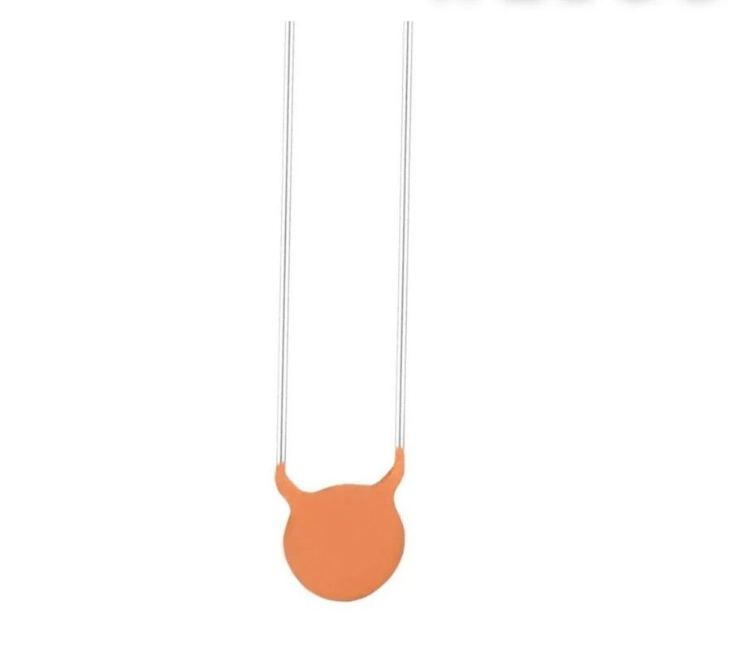

Ceramic Capacitor

üîß Basic Information
- Component: Capacitor
- Capacitance: 100 microfarads (100μF)
- Unit Symbol: μF (microfarad)
- Main Function: Stores electrical energy; blocks DC and allows AC to pass (depending on configuration)
üß™ 100ŒºF Electrolytic Capacitor
- Type: Polarized (has positive and negative terminals)
- Typical Voltage Ratings: 10V, 16V, 25V, etc. (choose higher than your supply voltage)
- Polarity: Must be connected with correct polarity (– marked by a stripe)
- Common Uses:
- Power supply smoothing
- Energy storage
- Filtering and decoupling
üß™ Ceramic Capacitor (Note)
- Usually not available in 100μF:
- Ceramic types are typically 1pF to ~10μF (multilayer variants)
- Non-polarized: Can be connected either way
- Advantages:
- Very stable
- Fast response
- High-frequency applications
- Disadvantages (compared to electrolytic):
- Limited to lower capacitance values
- Physically larger when capacitance is high
⚠️ Important Notes
- 100μF ceramic capacitors exist (MLCC type), but:
- They are expensive and large
- Typically used in specialized high-frequency circuits
- Often surface-mount (SMD) and rated for low voltage (e.g., 6.3V, 10V)
← Back to Components